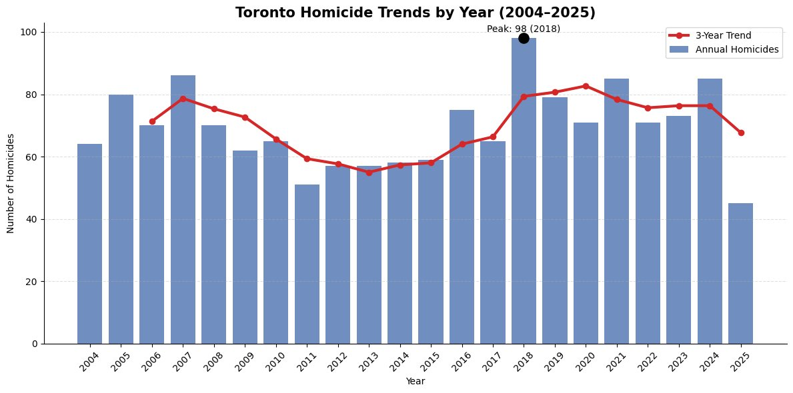
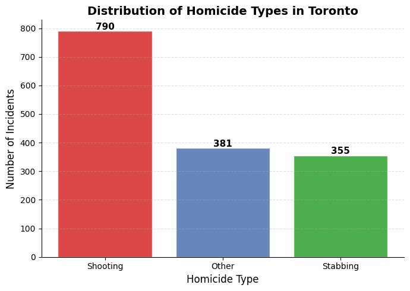
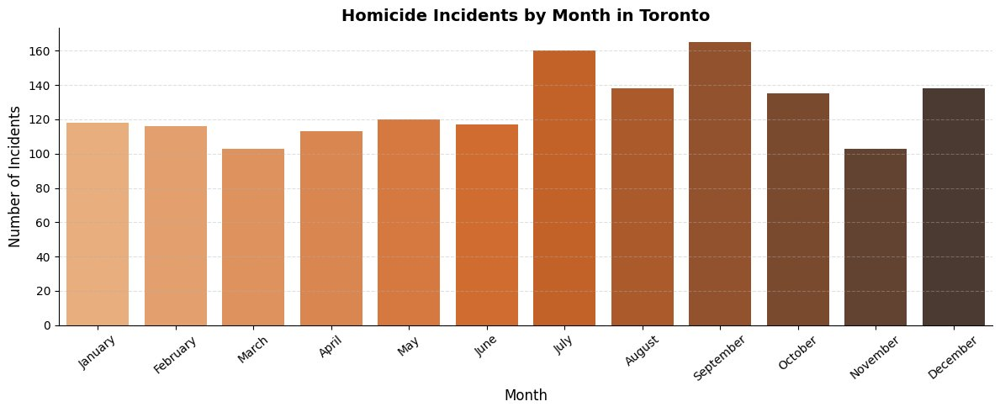
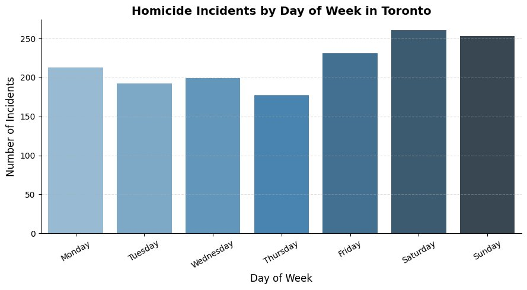
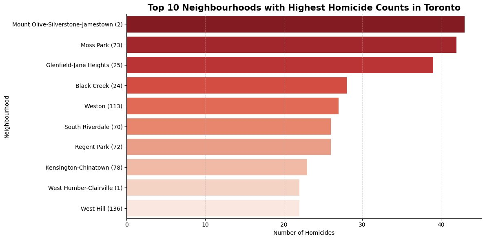
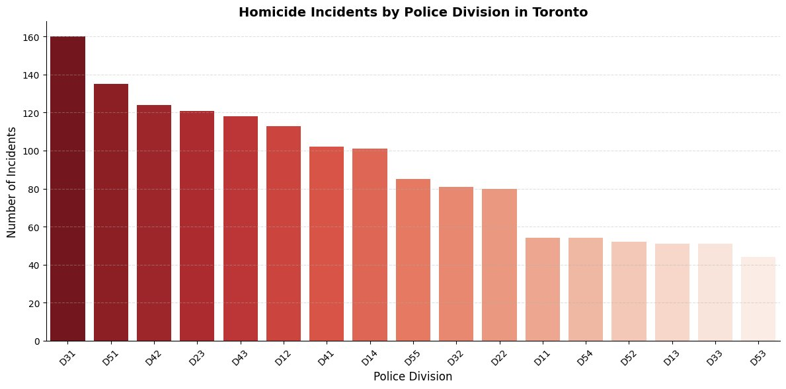

Business Analytics Project (BDA800) - A CRISP-DM analysis of 21 years of Toronto Police Service homicide data, combining descriptive mapping, predictive classification, and prescriptive recommendations for public safety resource allocation.
This project analyzed spatial, temporal, and categorical patterns of homicide incidents in Toronto (2004-2025) using the Toronto Police Service open dataset. The goal was to move beyond reactive policing by building a data-driven system that supports proactive resource allocation and better emergency dispatch decisions.
Research questions:
Source: Toronto Police Service Homicide Open Data. 1,526 records, 18 features, 21 years - zero missing values and zero duplicates after cleaning.
OCC_DATE from string to datetime; validated all coordinates within Toronto boundsOBJECTID, EVENT_UNIQUE_ID, HOOD_140, NEIGHBOURHOOD_140, projected x/y coordinatesDIVISION, NEIGHBOURHOOD_158, OCC_MONTH, OCC_DOWHOMICIDE_TYPE (3 classes: Shooting=1, Stabbing=2, Other=0)
# Drop unnecessary columns
df = df.drop(columns=['OBJECTID', 'EVENT_UNIQUE_ID',
'HOOD_140', 'NEIGHBOURHOOD_140', 'x', 'y'])
# Label encode categorical features
df_model['HOMICIDE_TYPE_ENC'] = le_target.fit_transform(df_model['HOMICIDE_TYPE'])
df_model['DIVISION_ENC'] = le_div.fit_transform(df_model['DIVISION'])
df_model['NEIGHBOURHOOD_ENC'] = le_neigh.fit_transform(df_model['NEIGHBOURHOOD_158'])
# 7 predictive features
X = df_model[['DIVISION_ENC', 'NEIGHBOURHOOD_ENC', 'OCC_YEAR',
'OCC_MONTH', 'OCC_DOW', 'LAT_WGS84', 'LONG_WGS84']]
y = df_model['HOMICIDE_TYPE_ENC']
# Stratified 80/20 split
X_train, X_test, y_train, y_test = train_test_split(
X, y, test_size=0.2, random_state=42, stratify=y
)
EDA focused on four dimensions: geographic hotspots, homicide type distribution, temporal patterns, and type trends over time.






Baseline - Zero Rule: Predicts "Shooting" for every instance. Achieves 54.25% accuracy - the performance floor any useful model must exceed.
from collections import Counter
most_common_class = Counter(y_train).most_common(1)[0][0]
y_pred_baseline = [most_common_class] * len(y_test)
print(f"Baseline Accuracy: {accuracy_score(y_test, y_pred_baseline):.4f}")
# Output: 0.5425 — Most frequent class: 'Shooting'
Model 1 - Decision Tree (max_depth=5): Stable generalization but failed to surpass baseline due to class imbalance bias toward Shooting. Minority classes heavily misclassified.
dt = DecisionTreeClassifier(max_depth=5, random_state=42)
dt.fit(X_train_processed, y_train)
y_pred_dt = dt.predict(X_test_processed)
print(classification_report(y_test, y_pred_dt))
# Test Accuracy: 51.63% | CV Mean: 48.89% | CV Std: 0.0125
Model 2 - Random Forest (200 trees): Best model - captures complex nonlinear interactions between geographic and temporal features that a single tree cannot model.
rf = RandomForestClassifier(n_estimators=200, random_state=42)
rf.fit(X_train_processed, y_train)
y_pred_rf = rf.predict(X_test_processed)
print(classification_report(y_test, y_pred_rf))
# Test Accuracy: 56.21% | CV Mean: 52.29% | CV Std: 0.0159
# 5-Fold Cross Validation
rf_cv_scores = cross_val_score(rf_cv, X_cv_dt, y_cv, cv=skf, scoring='accuracy')
print(f"Mean CV: {rf_cv_scores.mean():.4f} | Std: {rf_cv_scores.std():.4f}")
| Model | Test Accuracy | CV Mean (5-Fold) | CV Std | vs. Baseline |
|---|---|---|---|---|
| Baseline (Zero Rule) | 54.25% | - | - | - |
| Model 1: Decision Tree (max_depth=5) | 51.63% | 48.89% | 0.0125 | -2.62% |
| Model 2: Random Forest (200 trees) - Best | 56.21% | 52.29% | 0.0159 | +1.96% |
Increase community policing in Divisions D31 (North York/West End), D51 (Downtown East), and D42 (Scarborough/North East). Deploy dedicated units in Mount Olive-Silverstone-Jamestown.
21-year data shows these 3 divisions account for a disproportionate share of all homicides city-wide.Execute a proactive "Safety Surge" in Q3 each year with increased patrol presence and community engagement, especially on weekend evenings when risk is highest.
Consistent July-August spike across all 21 years - stable, predictable, and plannable in advance.Redirect resources toward gun buybacks, stronger enforcement against illegal firearms, and youth diversion efforts rather than generalized anti-violence programs.
Shootings represent ~52% of all cases and are the primary driver of rising trends since 2016.Integrate the model into TPS dispatch workflows to estimate likely homicide type in real time, enabling dispatchers to send the correct specialized unit faster.
56.21% accuracy from location and time data alone meaningfully improves over naive dispatch decisions.Download the full Jupyter notebook, presentation slides, and written report.